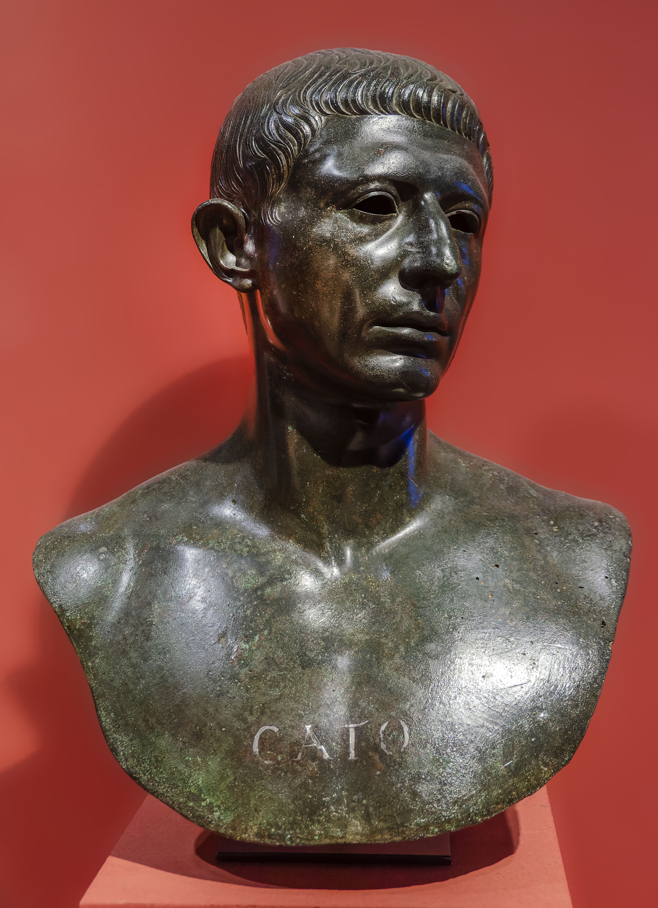

72 v. Chr.
Militärtribun in Makedonien
65 v. Chr.
zum Quästor gewählt
Forderte unrechtmäßig gezahlte Kopfgelder zurück
63 v. Chr.
Senator - fordert Todesstrafe für
Catilinarier (gegen Caesars Nachsicht)
62 v. Chr.
zum Volkstribun gewählt
Bekämpft Korruption und Sittenverfall
60 v. Chr.
Gründung des TRIUMVIRATS
Bündnis von:
- Caesar
- Pompeius
- Crassus
58 v. Chr.
Nach Zypern geschickt – regierte die Insel vorbildlich.
54 v. Chr.
Wahl zum Prätor
49 v. Chr.
BÜRGERKRIEG
Caesar überschreitet den Rubikon
→ Cato schließt sich Pompeius an (gegen Caesar)
48 v. Chr.
Nach Pompeius niederlage: Rückzug nach Nordafrika
46 v. Chr.
Kommandant von Utica
Schlacht bei Thapsus - Caesars Sieg
Cato begeht selbstmord
"Lieber tot als von Caesar begnadigt"
Cato begeht selbstmord
"Lieber tot als von Caesar begnadigt"
* 95 v. Chr.
(Adelsfamilie)
† 46 v. Chr.
(nahm sich das Leben )
(Adelsfamilie)
† 46 v. Chr.
(nahm sich das Leben )

MARCUS
PORCIUS
CATO
PORCIUS
CATO
Familie:
- Halbschwester: Servilia (Mutter von Brutus)
- Tochter: Porcia(heiratete Brutus)
Cato war...
- Unbestechlich
- Stoischer Philosoph
- Verteidiger der Republik
- Caesars Erzfeind
- Prinzipientreu